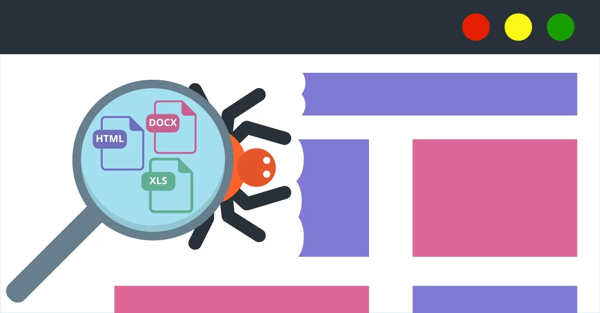

Importancia del Webscraping en la actualidad
Hoy en día sabemos la importancia de el manejo optimo de los datos, pues
en base a este se toman importantes decisiones en las empresas, por esto
la necesidad de implemantar metodos cada vez más eficientes y precisos
para esta importante labor.

Web scraping o raspado web, es una técnica utilizada mediante programas de software para extraer información de sitios web. Usualmente, estos programas simulan la navegación de un humano en la World Wide Web ya sea utilizando el protocolo HTTP manualmente, o incrustando un navegador en una aplicación. Tomado de wikipedia
Aplicaciones del Webscraping
El Webscraping se usa mucho para el analisis de datos y la mineria de datos,
herramientas indispensables hoy en día en todas las empresas y támbien de
manera particular para proyectos que se pueden ofrecer a pequeñas y medianas empresas.
El análisis de datos es un proceso que consiste en inspeccionar, limpiar y transformar datos con el objetivo de resaltar información útil, para sugerir conclusiones y apoyo en la toma de decisiones.Tomado de wikipedia
Es util aprender Webscraping
Por supuesto que si, pues la demanda de personas con estas habilidades
y conocimientos es cada vez más alta, así que los invito a formarse en
Webscraping pues es una carrera prometedora.
Habilidades para ser analista de datos:
Conocimientos actualizados de Matemáticas, Estadística, Big Data y Analítica web. Experiencia con lenguajes de programación y bases de datos: Python, SQL o Cloud Computing, entre otros. Manejo de herramientas de extracción y manipulación de datos. Diseño y visualización de datos.